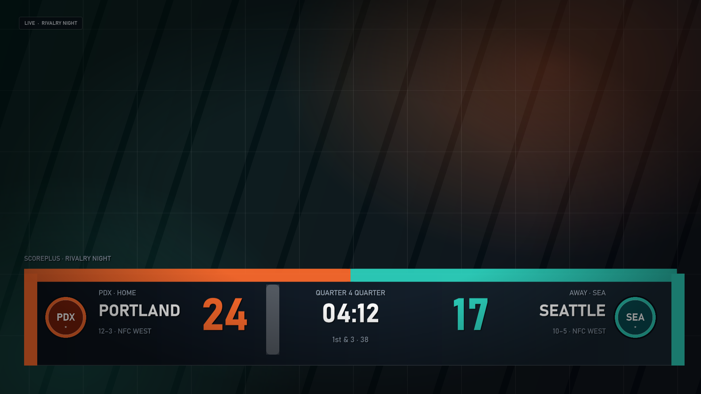
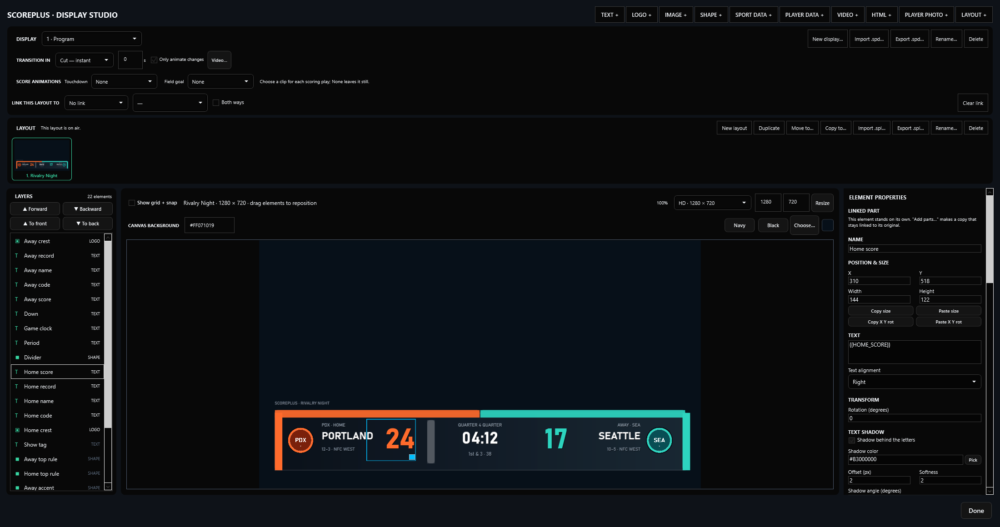
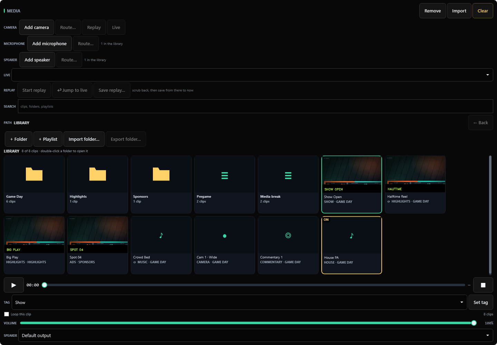
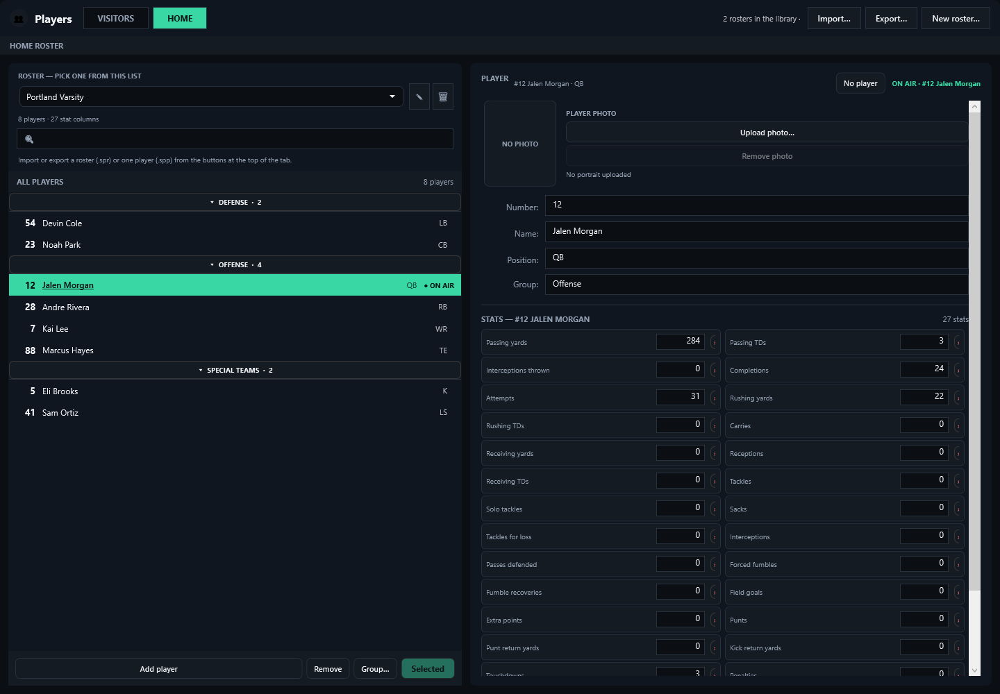

Live when it matters.
Scores, clocks, team names and the selected player hit the audience the instant they change. No refresh step between your finger and the broadcast.
Early Beta Native Windows · Built for live production
ScorePlus is a scoreboard and broadcast graphics system in one window. Drive the score, clocks, media and every display from a single console — with a graphic you design yourself.
Early Beta software · Windows 10 / 11 · 64-bit · No runtime install · Works offline

Real ScorePlus output. Real game state.
01 / Control room
Both teams, every clock, down and distance, possession, timeouts and your custom values — one page, no tabs, no hunting mid-play.

Scores, clocks, team names and the selected player hit the audience the instant they change. No refresh step between your finger and the broadcast.
Down, possession, timeouts, custom values and the chosen layout wait for Update Output. Rehearse the next look without showing it.
A 100-step undo, rolling autosaves every five seconds and the last eight recovery points on the launch screen. The show keeps moving.
02 / Display studio
Build the scorebug from scratch on a canvas that can be HD, Full HD, QHD, 4K or vertical. Type exact positions, pull team colors from the game, and animate anything independently.

03 / Media bay
The MEDIA tab is a full-size cue deck for clips, cameras, microphones and replay. Import once, tag it, then send it to a video box, a speaker bus or a quick-media button without leaving the show.
.spf.Ads plays only inside the video element watching Ads; ANY takes whatever is cued.12 quick-media slots on the console and every detached panel.


04 / Stat tracking
Rosters are real stat sheets. Each sport opens with 20+ columns — 27 for American football — so nobody has to invent a stat before the game starts.
.spr or a player as .spp; numbers, names, positions and stat columns travel. Stat values do not.05 / Built for the booth
The details that matter when the clock is running and everybody is watching.
Your score and clocks are live. The next down, possession and custom values are yours to prepare until you publish.
Track field goal attempts, turnovers, penalties — or type 3rd, N/A, TBD.
{{STAT:Turnovers}}
Give touchdowns and field goals their own motion clips. Play the pulse, flash a full-frame card, then settle back to the layout.
Every display keeps its own layouts, its own on-air choice and its own transition. Link them or hand parts from one layout to another.
Serve the same controls to a phone or tablet on the local network. Pause a clock, cue a clip or step a value from the sideline.
Undo the last 100 changes. Autosaves roll every five seconds. A saved game carries every display, layout, motion clip and roster on air.
06 / Any game day
07 / Get ScorePlus
One Windows PC. No cloud account. No separate runtime. Pick the installer for updates and a Start Menu shortcut, or take the portable build anywhere.
Early Beta software. ScorePlus is under active development, builds land often, and rough edges are expected. Don't run it as the only copy of a show you care about.